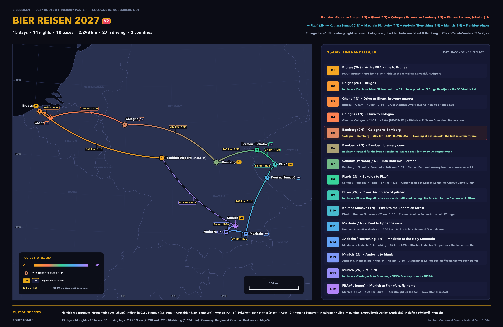

Frankfurt Airport → Bruges (2N) → Ghent (1N) → Cologne (1N, new) → Bamberg (2N) → Pivovar Permon, Sokolov (1N) → Plzeň (2N) → Kout na Šumavě (1N) → Maxlrain Bierstube (1N) → Andechs/Herrsching (1N) → Munich (2N) → Frankfurt Airport
Changed vs v1: Nuremberg night removed, Cologne night added between Ghent and Bamberg · ← Back to v1 planner
Closed-loop rental-car pilgrimage starting and ending at Frankfurt Airport (FRA): 14 nights across 10 overnight bases in Belgium, Germany, and Czechia, with 11 driving legs (2,298.3 km / 27 h 04) and 4 car-free brewery crawl days. Cologne (Köln) on Day 4 splits the old 6 h 51 Ghent→Bamberg marathon into two manageable hops, while Day 15 runs straight from Munich back to FRA (402.0 km / 4 h 04).
Click any numbered marker (1–11) or route leg to inspect overnight stays, brewery addresses, notes, and the next OSRM driving leg.

All 43 vetted breweries, medieval cellars, monastery taps, and brown cafés across the 10 overnight bases, ranked 1..n per city with what to order at each stop.
Historic centre, De Halve Maan, brown bars on the canal.
Only active brewery in the historic centre; Brugse Zot, Straffe Hendrik, 3 km beer pipeline, XL rooftop tour.
Hidden alley café, house tripel at 11%, maximum three per person.
300+ bottles, the classic brown bar of Bruges.
Oldest pub in Bruges (1515), bocce court in the garden.
Vaulted cellar bar with a full Trappist list.
Brewery-café on the canal, Flemish red house beer.
Gruut, Dok Noord, Dulle Griet and the Waterhuis.
City brewery using a medieval herb-and-spice mix instead of hops: Blond, Amber, Brown, White, Inferno.
Dok-Noord 4B, 30 taps in a converted metal workshop; Pils 13 is the flagship.
Belgian-American duo bridging Belgian tradition and US craft; Forelstraat taproom.
Vrijdagmarkt 50, 500 beers, the shoe-in-the-basket ritual for the house Max.
Groentenmarkt 9, around 170 beers, canal terrace; house beers Gandavum and Klokke Roeland.
Beer shop in Dok-Noord, the best take-home selection in the city.
Kölsch country: Früh am Dom, Päffgen, Mühlen, Lommerzheim and the Ehrenfeld craft scene.
The classic Kölsch hall beside the cathedral; brewed on site since 1904 and poured by Köbes in 0.2 l Stangen.
Heumarkt 6, Mühlen Kölsch since 1858 — one of the few houses still brewing its own Kölsch in the old town.
Friesenstraße 64-66: the brewery tap, Kölsch straight from the wooden barrel, no music, no excuses.
Unter Taschenmacher 5-7, a Kölsch house with roots in the 14th century, right behind the Alter Markt.
Mühlengasse 1, historic panelled rooms near the river, Peters Kölsch on tap.
Siegesstraße 18 in Deutz: cult pub, Kölsch, Schweinshaxe and a queue of locals by 18:00.
Venloer Straße 386 in Ehrenfeld — Cologne's craft counterpoint, own beers brewed behind the bar.
UNESCO old town, nine breweries, rauchbier capital.
Rauchbier since 1405, beechwood-smoked malt from oak barrels in a medieval vaulted cellar.
The locals' rauchbier — subtler smoke than Schlenkerla.
The legendary 'aU' Ungespundetes, naturally carbonated and unfiltered.
Dwarf logo, Zwergla dark lager, brewery tap opposite Spezial.
Beer garden with the best view over the city.
Oldest brewery in Bamberg (1533), Schwärzla.
Cult Herren Pils, the counterpoint to all the smoke.
Mining-country craft brewery with its own restaurant and rooms.
Komenského 77: mining-country craft brewery, Permon IPA 15°, dark specials, brewery restaurant on site.
Birthplace of pilsner, tank beer, Pilsner Urquell cellars.
Where pilsner was born in 1842; cellars tour with unfiltered, unpasteurised tank beer.
Pražská 8, a pub since 1637 and the best-poured tank Urquell in town.
Attached to the brewery, freshest tank Pilsner you will get.
Brewery hotel with its own beer spa and a solid dark lager.
Czech craft pioneer: IPAs, stouts and sours outside the pilsner tradition.
Cult 12° lager, revived 2006, deep in the Bohemian forest.
Revived in 2006 from a defunct 19th-century brewery; the 12° pale lager is a cult beer among Czech beer nerds.
Schlossbrauerei Maxlrain, brewery inn south of Munich.
Family-owned castle brewery in Tuntenhausen; Helles, Dunkel and Weißbier served in the Bierstube next door.
Benedictine monastery brewery above the Ammersee; sleep in Herrsching.
Benedictine monastery brewery since 1455; Doppelbock Dunkel at 7.1% with a view over the Ammersee.
Inn and restaurant by the lake, pours the full Andechs range; the practical base for the night.
Augustiner, Schneider, Giesinger, ORCA and the beer halls.
Munich's oldest brewery and the locals' choice; Edelstoff from wooden barrels under the chestnuts.
The original wheat-beer house; Aventinus is the benchmark Weizenbock.
Brewing since 1589 — go once for the room, not for the quiet.
Garage-to-glory Munich craft brewery; Erhellung unfiltered Helles.
Tiny nano-brewery making juicy NEIPAs that rival New England.
Small, refined Munich brewery for a quieter final round.
Historic brewery site above the Isar, home of the Starkbierfest.
Five distinct European brewing cultures in one loop: Flanders wild & herb ales, Rhineland top-fermented Kölsch & Düsseldorf Altbier, Franconian smoked & unbunged cellar lagers, Bohemian decoction tank pilsners, and Upper Bavarian wheat & monastery bocks.
| Style | What to Expect | Typical ABV | Serving Note |
|---|---|---|---|
| Flemish red | Oak-foeder aged red-brown ale; tart red-currant, cherry, balsamic tang balanced by soft caramel malt. | 5.0 – 6.5% | Stemmed tulip or goblet at 8–10 °C; blend of young and oak-aged stock (Bourgogne des Flandres, Rodenbach). |
| lambic / gueuze | Spontaneously fermented wild wheat-barley beer; bone-dry barnyard funk, lemon zest, lively champagne fizz in gueuze blends. | 5.0 – 7.0% | Uncarbonated straight lambic in a tumbler or sparkling Oude Gueuze from corked bottles in a fluted glass. |
| saison | Dry, peppery Wallonian farmhouse ale; expressive yeast phenols, citrus peel, earthy noble hop snap. | 5.5 – 7.0% | Wide tulip glass at 8–10 °C with a rocky, persistent white foam cap. |
| tripel | Deceptively strong pale abbey-style ale; spicy yeast esters, honeyed pilsner malt, dry warming finish. | 8.0 – 11.0% | Wide chalice or house goblet at 8–10 °C (De Garre's 11% house tripel comes with cheese cubes; max 3). |
| dubbel | Rich mahogany abbey ale brewed with dark candi sugar; dried plum, raisin, toasted bread crust, gentle spice. | 6.5 – 8.0% | Wide-mouthed Trappist chalice at cellar temperature (10–12 °C) to open dark-fruit aromatics. |
| witbier | Unfiltered spiced wheat beer with coriander seed and bitter Curaçao orange peel; silky, zesty, refreshing. | 4.5 – 5.5% | Hexagonal tumbler chilled (5–7 °C), swirled gently to suspend the yeast cloud. |
| gruut (herb beer) | Medieval Ghent style brewed with a botanical gruit spice-and-herb blend instead of hops; herbal, earthy, lightly floral. | 5.0 – 9.0% | Poured across Blond, Amber, Brown, White, and Inferno strengths at Gruut Stadsbrouwerij in Ghent. |
| Style | What to Expect | Typical ABV | Serving Note |
|---|---|---|---|
| Kölsch | Protected-origin (Kölsch-Konvention) top-fermented, cold-conditioned pale ale; delicate pilsner malt, subtle pear-apple ester, crisp noble hop finish. | 4.8% | 0.2 L cylindrical Stange carried in a Kranz tray; Köbes keeps refilling fresh glasses until you place your coaster (Bierdeckel) on top. |
| Altbier (Düsseldorf, 39 km) | Cologne's copper-bronze Rhineland rival 39 km downriver: top-fermented, cold-lagered ale with nutty Munich malt snap and firm hop bitterness. | 4.7 – 5.2% | 0.2 L or 0.25 L straight Altbierbecher tapped from wooden barrels at Düsseldorf's Altstadt Hausbrauereien (Uerige, Schlüssel, Füchschen, Schumacher). |
| Style | What to Expect | Typical ABV | Serving Note |
|---|---|---|---|
| Rauchbier | Bottom-fermented lager kilned over open beechwood logs; savoury campfire smoke over clean Franconian malt. | 4.8 – 6.5% | Gravity-dispensed straight from pitched oak barrels (vom Holzfass) in ceramic or dimpled 0.5 L Seidla. |
| Ungespundetes / Kellerbier | Unfiltered, unbunged cellar lager with soft natural carbonation, bready Munich/Vienna malt, and herbal hops. | 4.8 – 5.5% | Served cool from cellar lagering tanks with a low, creamy head; order 'ein U' (e.g. Mahr's Bräu aU). |
| Helles | Drier and slightly hoppier than Southern Bavarian Helles; crisp pilsner malt graininess with clean floral balance. | 4.7 – 5.3% | 0.5 L Seidla mug in brewery taverns or shaded hillside Bierkeller. |
| Pils | Assertively bitter, bone-dry Franconian Pilsner showcasing aromatic Hallertau and Spalt noble hops. | 4.8 – 5.2% | Tall slender Pilsner glass or tulip with a tight 3-minute foam crown (Keesmann Herren Pils benchmark). |
| Bock | Seasonal strong lager (autumn/winter Urbock & Maibock); deep melanoidin malt richness, warming, smoked or unsmoked. | 6.5 – 7.5% | 0.5 L glass or stoneware mug in late autumn/spring; pace carefully alongside hearty Franconian roast pork. |
| Style | What to Expect | Typical ABV | Serving Note |
|---|---|---|---|
| světlý ležák 12° | The classic 12° Plato Czech pale lager: triple-decoction mash, Moravian malt depth, spicy Žatec (Saaz) hop bitterness. | 4.4 – 5.2% | Heavy dimpled 0.5 L Tübinger mug poured 'na hladinku' under a dense, wet, creamy foam cap. |
| tmavé (dark lager) | Bohemian dark lager balancing roasted chocolate and caramel malt sweetness with clean lager crispness — never burnt. | 4.4 – 5.8% | 0.5 L handled mug; also ordered 'řezané' (half-and-half cut with pale lager) in traditional hospody. |
| tank beer | Unpasteurised (and in Urquell's cellars, unfiltered) světlý ležák delivered straight from brewery to pub steel/copper bladders. | 4.4 – 5.0% | Tankové pivo kept at 6–8 °C without CO₂ contact; fresher, rounder malt and livelier Saaz hop oils than kegged pours. |
| Czech IPA | Modern Bohemian craft wave (typically 14°–16° Plato) pairing New World citrus/pine hops with structured Czech malt. | 5.8 – 6.8% | 0.4 L or 0.5 L craft tulip/shaker at brewpubs like Pivovar Permon (Permon IPA 15°) and Pivovar Raven. |
| Style | What to Expect | Typical ABV | Serving Note |
|---|---|---|---|
| Helles | Soft-water Munich golden lager; gentle bready-sweet pilsner malt, whisper-light Hallertau floral hops, effortless drinkability. | 4.8 – 5.6% | 0.5 L Willibecher or 1 L Maßkrug; supreme when tapped from wooden barrels (Holzfass Augustiner Edelstoff). |
| Weißbier | Top-fermented Bavarian wheat beer (50%+ malted wheat); signature banana and clove yeast esters, lush effervescence. | 5.0 – 5.6% (Weizenbock 8.2%) | Tall curved 0.5 L Weizenglas; swirl the last centimetre of bottle yeast before topping the foam dome. |
| Doppelbock | Monastic 'liquid bread' brewed originally for Lenten fasting; dark dried fig, toasted bread crust, velvety malt body. | 7.0 – 8.5% | 0.5 L mug or stemmed Pokal; Kloster Andechs Doppelbock Dunkel (7.1%) on the Holy Mountain is the archetype. |
| Festbier | Deep-golden seasonal festival lager; slightly richer and stronger than everyday Helles with a clean, crisp finish. | 5.6 – 6.3% | 1 L Maßkrug in beer gardens and festival halls during late summer and autumn. |
Quick ordering cheat sheet in itinerary order from Night 1 in Bruges through Cologne to Night 14 in Munich.
Bourgogne des Flandres on the canal; pair with Brugse Zot / Straffe Hendrik at De Halve Maan and the 11% house tripel at De Garre.
Blond, Amber, Brown, White, and Inferno at Gruut Stadsbrouwerij; follow with Pils 13 at Dok Brewing and house Max at De Dulle Griet.
Fresh 0.2 L Stangen at Früh am Dom and house-brewed Mühlen Kölsch at Heumarkt, wooden-barrel Päffgen Kölsch, Lommerzheim in Deutz, and Ehrenfeld craft pours at Braustelle.
Oak-barrel Märzen Rauchbier at Schlenkerla, subtler Rauchbier at Spezial, 'aU' Ungespundetes at Mahr's Bräu, Zwergla at Fässla, and Herren Pils at Keesmann (plus optional 54-min Rotbier trip to Nuremberg).
Permon IPA 15° and dark specials straight from the taps in Pivovar Permon's Komenského 77 restaurant.
Unfiltered Urquell in the historic cellars, copper-tank Pilsner at U Salzmannů and Na Parkánu, dark lager at Purkmistr, and craft pours at Raven.
Unpasteurised Kout 12° pale lager at the revived 19th-century brewery in the Šumava foothills.
Schlossbrauerei Maxlrain Helles, Dunkel, and Weißbier at the castle Bierstube next door.
Monastery Doppelbock Dunkel (7.1%) overlooking the Ammersee at Kloster Andechs, and the full range down at Andechser Hof in Herrsching.
Wooden-barrel Edelstoff at Augustiner-Keller, Erhellung unfiltered Helles at Giesinger Bräu, Aventinus at Schneider Bräuhaus, and NEIPAs at ORCA Brau.
Every distance and duration below comes directly from OSRM car routing in data/route-2027-v2.json — zero estimates.
| Day | From → To | Distance (km) | Time (h:mm) | Route Note |
|---|---|---|---|---|
| Day 1 | 🇩🇪 Frankfurt am Main Airport → 🇧🇪 Bruges | 492.6 km (493) | 5:15 (5 h 15) | Arrival motorway push west across Germany & Belgium (E40) — swap drivers if jet-lagged. |
| Day 3 | 🇧🇪 Bruges → 🇧🇪 Ghent | 49.2 km (49) | 0:44 (44 min) | Short Flemish hop on the E40; arrives in Ghent well before lunch. |
| Day 4 | 🇧🇪 Ghent → 🇩🇪 Cologne | 265.2 km (265) | 3:06 (3 h 06) | NEW · COLOGNE East across Belgium into the Rhineland; check in before first 0.2 L Kölsch at Früh am Dom. |
| Day 5 | 🇩🇪 Cologne → 🇩🇪 Bamberg | 387.2 km (387) | 4:01 (4 h 01) | LONG DAY · 4 h 01 The long base-to-base day (4 h 01) — split with a break in Koblenz or Würzburg before evening Rauchbier. |
| Day 7 | 🇩🇪 Bamberg → 🇨🇿 Pivovar Permon, Sokolov | 160.2 km (160) | 1:59 (1 h 59) | Scenic cross-border run via Bayreuth & Cheb; activate Czech e-vignette before crossing. |
| Day 8 | 🇨🇿 Pivovar Permon, Sokolov → 🇨🇿 Plzeň | 86.8 km (87) | 1:28 (1 h 28) | Relaxed Bohemian drive along the Ohře valley; easy detour to Loket (12 min) or Karlovy Vary (17 min). |
| Day 10 | 🇨🇿 Plzeň → 🇨🇿 Kout na Šumavě | 61.6 km (62) | 1:06 (1 h 06) | Short drive south-west into the Šumava (Bohemian Forest) foothills. |
| Day 11 | 🇨🇿 Kout na Šumavě → 🇩🇪 Maxlrain Bierstube | 259.8 km (260) | 3:11 (3 h 11) | Crosses back into Upper Bavaria past Regensburg (optional 1 h 32 lunch detour). |
| Day 12 | 🇩🇪 Maxlrain Bierstube → 🇩🇪 Andechs / Herrsching | 89.2 km (89) | 1:25 (1 h 25) | Pre-Alpine country roads west across Upper Bavaria to Ammersee. |
| Day 13 | 🇩🇪 Andechs / Herrsching → 🇩🇪 Munich | 44.5 km (45) | 0:45 (45 min) | Shortest leg of the trip (44.5 km / 45 min) straight into Munich. |
| Day 15 | 🇩🇪 Munich → 🇩🇪 Frankfurt am Main Airport | 402 km (402) | 4:04 (4 h 04) | FINAL · 4 h 04 Direct 4 h 04 motorway return from Munich to FRA — leave right after breakfast (or sleep near the airport the night before for early flights). |
| 15 Days | Closed Loop: FRA → 10 Bases → FRA (11 legs) | 2,298.3 km (2,298 km) | 27:04 (1,624 min) | 3 countries · 14 nights · 4 in-place crawl days |
Upper triangle directly from matrix.pairs (55 OSRM pairs over all 11 stops including Cologne), mirrored symmetrically across the — diagonal. Gold-outlined cells mark consecutive stops driven on the v2 itinerary — notice how v1's ghent|bamberg push (651 km / 6:51) is split into ghent|cologne (265 km / 3:06) + cologne|bamberg (387 km / 4:01).
| From \ To | FRA | Bruges | Ghent | Cologne | Bamberg | Permon (Sokolov) | Plzeň | Kout na Šumavě | Maxlrain | Andechs | Munich |
|---|---|---|---|---|---|---|---|---|---|---|---|
| FRA | — | 493 km5:15 | 453 km4:54 | 181 km2:05 | 213 km2:24 | 375 km4:07 | 425 km4:13 | 394 km4:21 | 441 km4:30 | 439 km4:27 | 402 km4:04 |
| Bruges | 493 km5:15 | — | 49 km0:44 | 296 km3:31 | 682 km7:17 | 844 km9:01 | 894 km9:06 | 863 km9:14 | 910 km9:23 | 869 km9:10 | 871 km8:57 |
| Ghent | 453 km4:54 | 49 km0:44 | — | 265 km3:06 | 651 km6:51 | 813 km8:35 | 863 km8:41 | 832 km8:48 | 879 km8:57 | 838 km8:45 | 840 km8:31 |
| Cologne | 181 km2:05 | 296 km3:31 | 265 km3:06 | — | 387 km4:01 | 550 km5:45 | 600 km5:50 | 569 km5:58 | 616 km6:07 | 614 km6:04 | 576 km5:41 |
| Bamberg | 213 km2:24 | 682 km7:17 | 651 km6:51 | 387 km4:01 | — | 160 km1:59 | 255 km2:41 | 224 km2:48 | 271 km2:57 | 269 km2:54 | 232 km2:31 |
| Permon (Sokolov) | 375 km4:07 | 844 km9:01 | 813 km8:35 | 550 km5:45 | 160 km1:59 | — | 87 km1:28 | 112 km1:51 | 322 km3:32 | 320 km3:29 | 283 km3:06 |
| Plzeň | 425 km4:13 | 894 km9:06 | 863 km8:41 | 600 km5:50 | 255 km2:41 | 87 km1:28 | — | 62 km1:06 | 328 km3:30 | 326 km3:27 | 289 km3:04 |
| Kout na Šumavě | 394 km4:21 | 863 km9:14 | 832 km8:48 | 569 km5:58 | 224 km2:48 | 112 km1:51 | 62 km1:06 | — | 260 km3:11 | 258 km3:07 | 221 km2:45 |
| Maxlrain | 441 km4:30 | 910 km9:23 | 879 km8:57 | 616 km6:07 | 271 km2:57 | 322 km3:32 | 328 km3:30 | 260 km3:11 | — | 89 km1:25 | 50 km0:50 |
| Andechs | 439 km4:27 | 869 km9:10 | 838 km8:45 | 614 km6:04 | 269 km2:54 | 320 km3:29 | 326 km3:27 | 258 km3:07 | 89 km1:25 | — | 45 km0:45 |
| Munich | 402 km4:04 | 871 km8:57 | 840 km8:31 | 576 km5:41 | 232 km2:31 | 283 km3:06 | 289 km3:04 | 221 km2:45 | 50 km0:50 | 45 km0:45 | — |
Passenger cars on Czech motorways require an official electronic vignette (edalnice.cz) registered to the rental license plate — purchase it before crossing near Cheb on Day 7 to cover the Bohemian stretch (Days 7–11), and confirm cross-border permission for Belgium and Czechia at the FRA rental desk.
Belgian and German motorways are toll-free for passenger cars, but watch urban Low Emission Zones: register foreign German rental plates online before entering inner Ghent, and verify the green German Umweltplakette windscreen sticker at FRA pick-up for central Cologne and Munich.
Adding Cologne on Day 4 breaks v1's gruelling 650.5 km / 6 h 51 Ghent→Bamberg haul into two comfortable legs: 265.2 km / 3 h 06 into Cologne and 387.2 km / 4 h 01 onward to Bamberg on Day 5 (easily split with lunch in Koblenz or Würzburg), adding just 1.8 km and 3 minutes to the entire 15-day loop.
Without the Nuremberg overnight, Day 15 runs 402.0 km / 4 h 04 straight up the A9 and A3 from Munich to Frankfurt Airport. Leave Munich right after an early breakfast for afternoon/evening flights — or, if your flight departs earlier, drive north on evening 14 and sleep near FRA.
16 optional side trips measured from their nearest overnight base, followed by six essential planning rules for a smooth pilgrimage.
Abbey café opposite Sint-Sixtus pouring Trappist Westvleteren 12, 8, and Blond on the terrace without needing a crate reservation.
Cathedral-like foeder halls where Flemish red-brown ales age for years in towering oak vats.
Flemish beer port home to De Koninck city brewery, historic brown bars, and legendary vintage-bottle café Kulminator.
Classic Rhineland beer rival 39 km north: wooden-barrel Altbier halls in the Altstadt as the brisk, bitter foil to Cologne's Kölsch.
Easy half-day run up the Rhine to Beethoven-Haus, riverfront promenades, and traditional Rhineland Brauhäuser.
Forested Kellerwald hillside lined with traditional rock-cut Franconian beer cellars under chestnut trees.
Walkable Franconian Switzerland trail linking four village family breweries (Reichold, Rothenbach, Stadter, Kathi-Bräu).
Keep Nuremberg's copper-red Rotbier on the itinerary as an easy 54-min day trip from Bamberg (Altstadthof, Schanzenbräu, Tucher Mautkeller).
Dramatic medieval castle town wrapped inside a tight horseshoe bend of the Ohře River — effortless stop en route to Plzeň.
Grand Bohemian spa town of riverside colonnades and steaming mineral springs just east of Sokolov.
Historic Saaz hop capital with the Hop Museum, Temple of Hops, and local brews yards from the bines.
Centuries-old granite beer caves with an underground restaurant and traditional warm beer-bath spa.
UNESCO medieval Danube city with time-capsule Kneitinger beer hall and Spitalbrauerei by the Stone Bridge (natural Day 10 break).
Bavarian pre-Alps peak reached by historic cog railway or cable car for clear-day Alpine panoramas.
Lakeside overnight base below Kloster Andechs — walk or ride the local bus up the Holy Mountain so the car stays parked.
Hilltop Bavarian State Brewery Weihenstephan north of Munich, revered for benchmark Hefeweizen, Vitus, and Korbinian.
Reserve English-language Pilsner Urquell cellar tours (for the unfiltered oak-barrel pour) and Purkmistr beer-spa slots weeks ahead, plus De Halve Maan's XL rooftop/pipeline tour in Bruges.
Small family breweries in Bamberg, Franconian villages, rural Bohemia, and Upper Bavaria frequently close on Mondays and/or Tuesdays (and Lommerzheim in Cologne closes Mondays/Tuesdays). Check taproom hours ahead.
Carry cash for traditional Cologne Brauhäuser, Bamberg Schwemme windows, and Czech country pubs. In Cologne, a Köbes automatically replaces empty 0.2 L Stangen until you lay your coaster (Bierdeckel) flat on top of your glass.
Czechia enforces zero tolerance (0.0% BAC) behind the wheel, and Germany and Belgium enforce strict limits as well. Finish each day's drive first, park the car, and explore every brewery on foot or transit.
Late spring through early autumn opens Bamberg's Greifenklau terrace, Forchheim's Kellerwald, Munich's chestnut-shaded Augustiner-Keller, Ammersee panoramas at Andechs, and Šumava forest trails.
The Day 15 Munich→FRA drive is 402 km / 4 h 04 before motorway roadworks (Baustellen), refuelling, and rental return. Leave Munich right after an early breakfast — or sleep near Frankfurt Airport on Night 14 if catching a morning or midday flight. Pack bottle sleeves the night before.